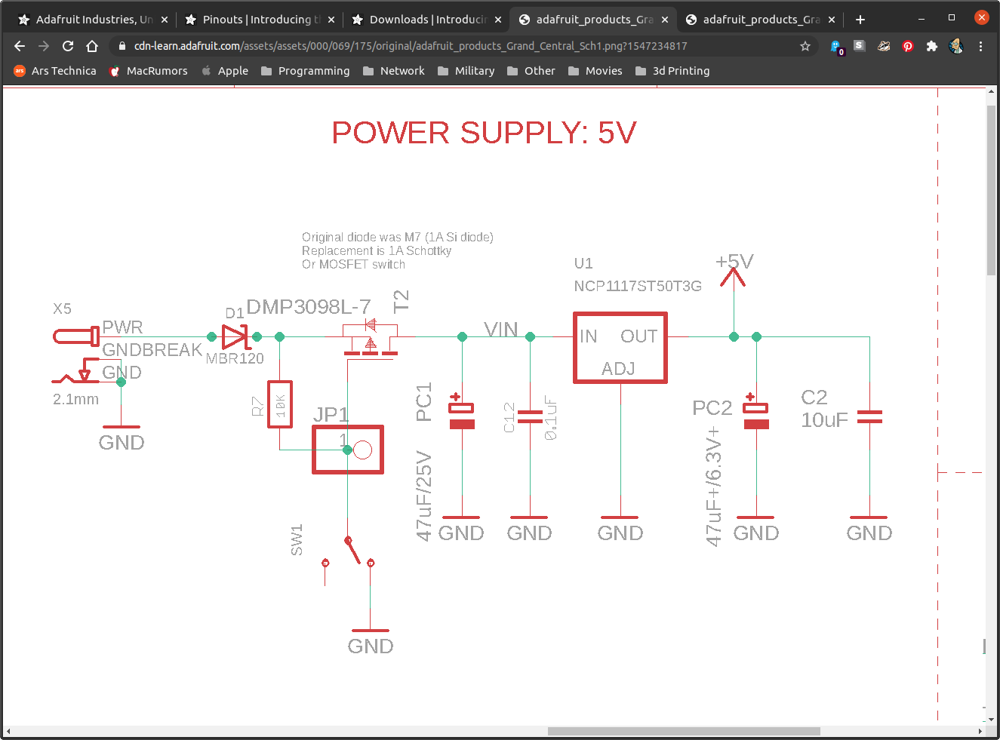
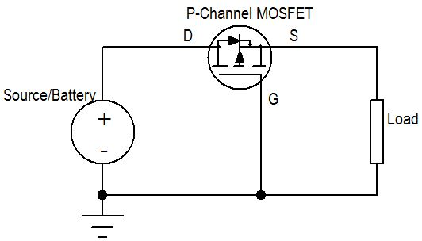
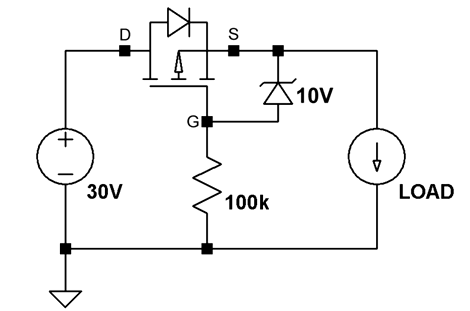

Reverse Polarity Protection for Power Systems
Preventing Reverse Polarity
The easiest way to prevent a battery from getting hooked up backwards in your robot is to key your power connectors to they can only be installed one way. However, if people are making their own, sometimes this isn’t good enough. A better way is to design your circuit so it prevents this.
Diodes
Diodes are simple and effective, but drop the input voltage. If you already have more input voltage than you need, say 12V in for a 5V system, then losing 1.5V isn’t a big deal. To reduce the impact of diodes, generally schottky diodes are used since they have a lower forward voltage drop than general pn-junction diodes.

MOSFET

Using a diode is one easy way to prevent current in your system from flowing in the wrong direction. However, they have a forward voltage drop which both reduces the amount of available battery voltage and wastes power.
| Part | Voltage Drop at 2A | Power at 2A |
|---|---|---|
| Diode (1N5400) | 0.85V | 1.7W |
| Schottky Diode | 0.55V | 1.1W |
| PNP MOSFET | R_DS(ON)=26 mOhm to 2A * .026 ohm = 52 mV | 1.04mW |
Using a PNP MOSFET is better because it lowers your battery voltage less and wastes less power.
Sometimes you have to do more:

This video does a great job of explaining this a little more. It also explains why you might have to include a resistor and zener diode to clamp the voltage, depending on the MOSFET you select.
Sizing MOSFET
If the values for Diodes Inc DMP2045U P-Channel MOSFET are:
- Max temp = 125C
- Ambient temp = 25C
- RDS(ON) = 90 mω
$$ \Delta T = T_{max} - T_{min} = P_D R_{\theta J A} \\ P_D = R_{DS(ON)} I^2_{rms} \\ I = 4.48A $$
{kind=link}